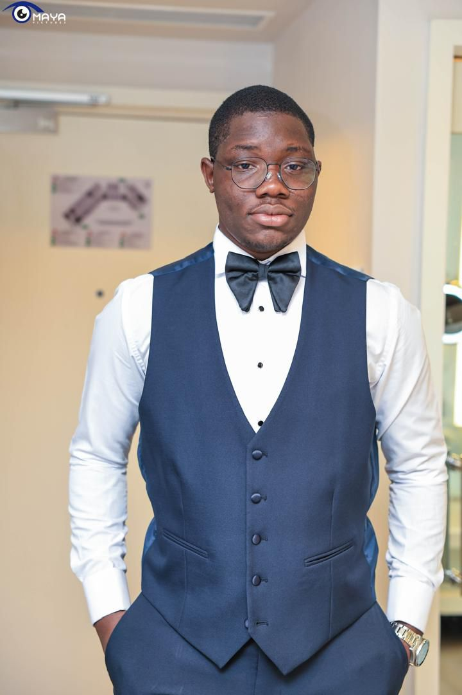

À Propos de Moi
Bonjour, je m'appelle Ryad, et je suis un développeur passionné par la création de solutions innovantes. Avec une forte expertise dans divers langages de programmation, j'ai travaillé sur de nombreux projets qui démontrent mon aptitude à résoudre des problèmes complexes avec des solutions élégantes.
Ma passion pour le code est doublée par un désir constant d'apprendre et de m'améliorer. J'aime explorer les nouvelles technologies et appliquer mes compétences pour transformer des idées en réalité.
